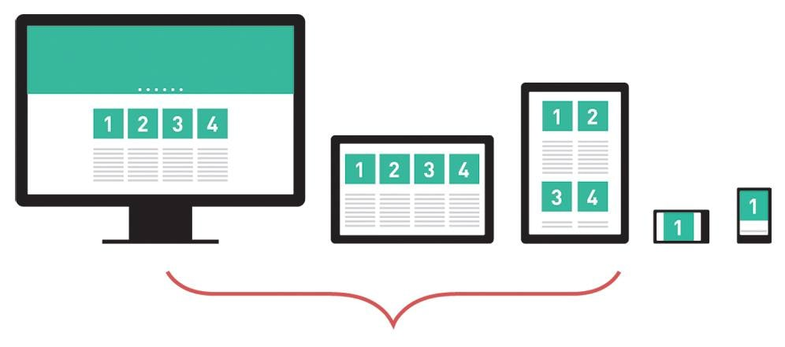
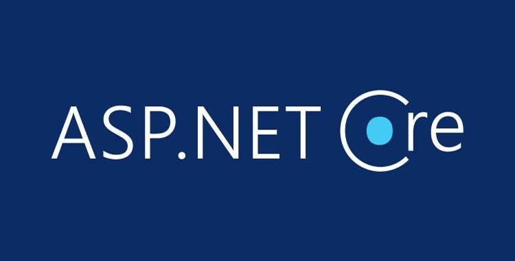
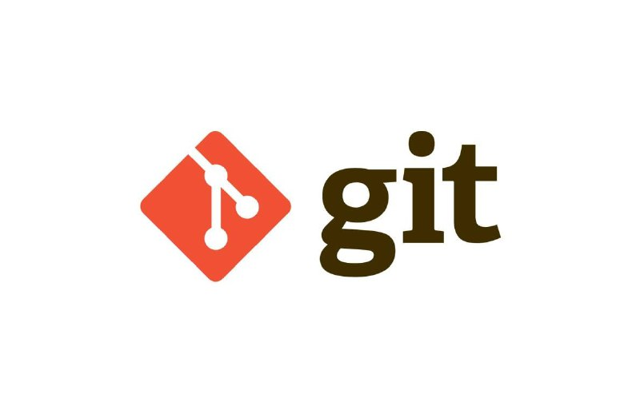
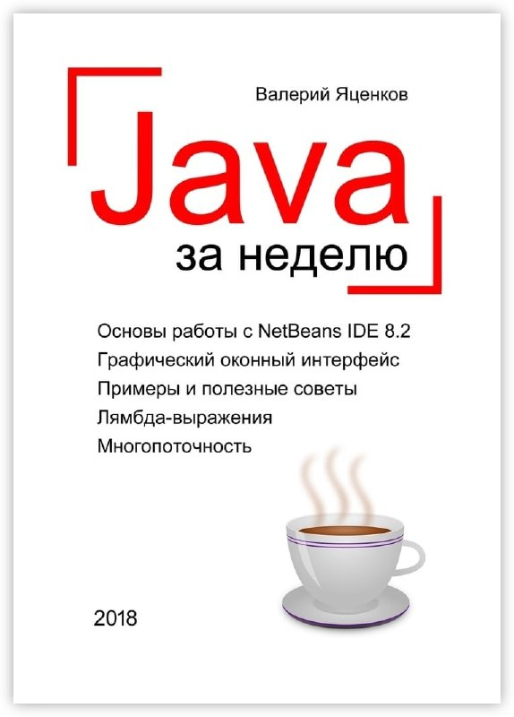
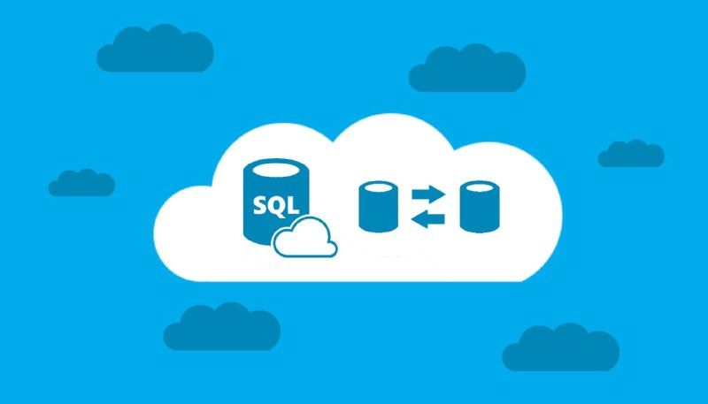
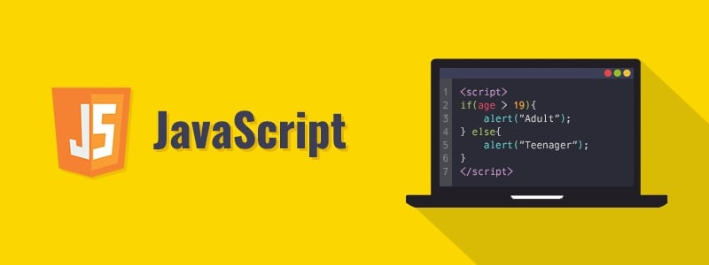
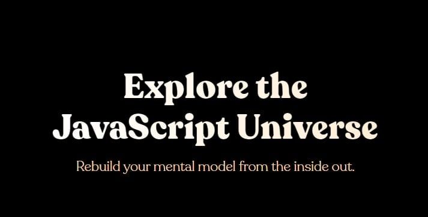
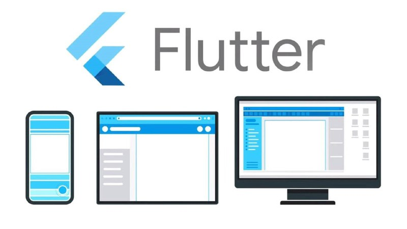

Верстка сайтов от 0 до 1 (2020)
Данный цикл статей абсолютно бесплатный и посвящен такой популярной теме, как верстка. Здесь в несколько шагов (уроков, этапов) будут рассмотрены основы создания страниц с помощью HTML и CSS, блочная верстка, адаптив, CSS и JavaScript, создание основных элементов страницы, меню, поговорим о препроцессорах и о том, как ускорить разработку.
React JS с нуля и до создания полноценного SPA-приложения
React — JavaScript-библиотека с открытым исходным кодом для разработки пользовательских интерфейсов. React разрабатывается и поддерживается Facebook, Instagram и сообществом отдельных разработчиков и корпораций
Unreal Engine - полное руководство по разработке на С++
Unreal Engine — игровой движок, разрабатываемый и поддерживаемый компанией Epic Games. Первой игрой на этом движке был шутер от первого лица Unreal, выпущенный в 1998 году
Курс - "Системный администратор"
Системные администраторы — сотрудники, в обязанности которых входит создание оптимальной работоспособности компьютеров и программного обеспечения для пользователей, часто связанных между собой общей работой на определённый результат
Дизайн сайта в Figma с нуля (2021)
Гид по Фигме
для начинающих веб-дизайнеров
Tilda Education
Figma (Фигма) — это графический онлайн-редактор для совместной работы. В нём можно создать прототип сайта, интерфейс приложения и обсудить правки с коллегами в реальном времени. В этой статье рассмотрим инструменты и возможности Фигмы, популярные плагины и расскажем, где научиться работать с сервисом бесплатно.
Тестировщик с нуля. Web, Mobile, Postman, SQL, Git, Bash (2021)
Тестировщики, или QA-инженеры, — это люди, которые проверяют, как работает программа или приложение. Они ищут ошибки, смотрят, чтобы программа делала именно то, что задумано, защищают продукт от хакеров, проверяют, как приложение работает на разных устройствах и в разных операционных системах.

Fullstack приложение на ASP Net Core, React и AntDesign(2021)
Компоненты инфраструктуры позволяют легко создавать, запускать и развертывать полноценное React-приложение. С этими React-компонентами вы можете сосредоточиться на написании бизнес-логики вашего приложения. Вам не нужно беспокоиться о его конфигурации.
Разработка Telegram ботов на Pyrogram Python (2021)
В этой статье мы реализуем простой, но крайне полезный проект на Python — бота для Telegram. Боты — это небольшие скрипты, которые могут взаимодействовать с API, чтобы получать сообщения от пользователя и отправлять информацию в разные чаты и каналы.

Linux / Git для начинающих (2021)
Контроль версий с помощью Git
Git — абсолютный лидер по популярности среди современных систем управления версиями. Это развитый проект с активной поддержкой и открытым исходным кодом. Система Git была изначально разработана в 2005 году Линусом Торвальдсом — создателем ядра операционной системы Linux.
Что есть React: Пишем свой UI-фреймворк (2021)
React — это JavaScript-библиотека для создания пользовательских интерфейсов. Обратите внимание, что это именно библиотека, а не фреймворк. React часто называют фреймворком, но это ошибка. Во-первых, его использование ни к чему вас не обязывает, не формирует «фрейм» проекта.

Java за неделю. Вводный курс
Java — строго типизированный объектно-ориентированный язык программирования общего назначения, разработанный компанией Sun Microsystems. Разработка ведётся сообществом, организованным через Java Community Process; язык и основные реализующие его технологии распространяются по лицензии GPL
[Фрилансер по жизни] Курс по верстке
Вёрстка – это структура всех элементов на странице документа, сайта или другого информационного носителя. Такими элементами могут быть изображения, заголовки, подзаголовки, таблицы, инфографика и сам текст.

Создание SQL - запросов в Microsoft SQL Server
Краткое руководство. Подключение к экземпляру SQL Server и выполнение запросов с помощью SQL Server Management Studio (SSMS)Начало работы с SQL Server Management Studio (SSMS) для подключения к экземпляру базы данных SQL Server и выполнения некоторых команд Transact-SQL (T-SQL).
Системы контроля версий Git (2021)
Эта глава о том, как начать работу с Git. Вначале изучим основы систем контроля версий, затем перейдём к тому, как запустить Git на вашей ОС и окончательно настроить для работы. В конце главы вы уже будете знать, что такое Git и почему им следует пользоваться, а также получите окончательно настроенную для работы систему.

Функции в JavaScript (2021)
Зачастую нам надо повторять одно и то же действие во многих частях программы.
Например, необходимо красиво вывести сообщение при приветствии посетителя, при выходе посетителя с сайта, ещё где-нибудь.
Чтобы не повторять один и тот же код во многих местах, придуманы функции. Функции являются основными «строительными блоками» программы.
Разработка отчетов в 1С. Система компоновка данных (2021)
Разработка отчетов в 1С — это востребовано
Задачи по разработке отчетов в 1С встречаются очень часто в практике любого программиста 1С или пользователя, который работает с 1С.

Просто Javascript (2021)
JavaScript — мультипарадигменный язык программирования. Поддерживает объектно-ориентированный, императивный и функциональный стили. Является реализацией спецификации ECMAScript

[Udemy] Разработка приложений с Flutter 2.0 и Dart для IOS и Android (2021)
Добро пожаловать в на курс по созданию мобильных приложений с Flutter и Dart. Flutter — это новый framework от Google по кросс-платформенной разработке мобильных приложений (т.е. для IOS и Android), что означает что разработчики создают приложения для Android и iOS с помощью одной кодовой базы!